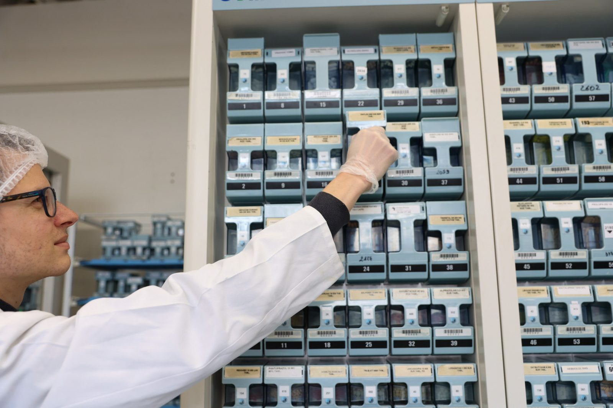
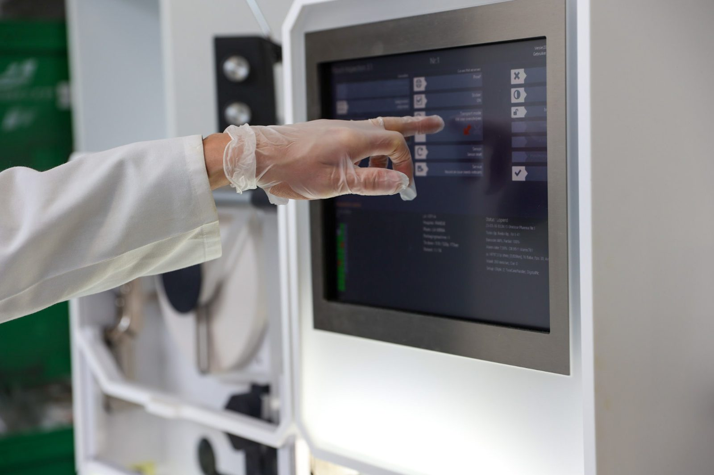
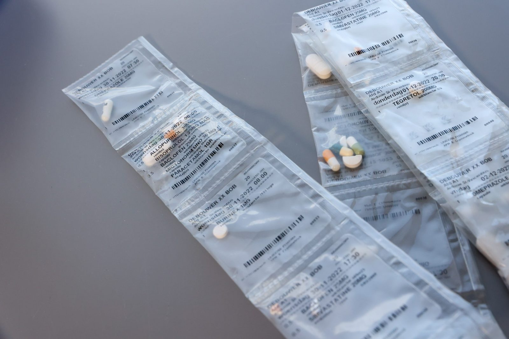

Wij verpakken en leveren medicatie per innamemoment, per bewoner — voor woonzorgcentra én andere zorginstellingen. Zo houdt uw zorgteam meer tijd over voor zorg in plaats van administratie.
08:00 — Metformine 500mg, Omeprazol 20mg
Schema aangepast door Dr. Willems — automatisch verwerkt
12:00 inname bevestigd door zorgteam — geen dubbels
Al meer dan 50 zorginstellingen kozen voor ons ervaren team, digitaal platform en gespecialiseerde fractioneringstechniek.
Elk centrum en elke bewoner is anders. Wij stemmen het volledige proces af op de werking van uw verpleegteam.
Eenvoudig bereikbaar, altijd up-to-date medicatieschema en aftekenmodule die dubbele inname voorkomt.
Gespecialiseerde medicatierobots stellen elk zakje samen per patiënt, per innamemoment — foutloos en snel.
Volledig zicht op medicatieverdeling voor zorgverantwoordelijken en eerstelijnswerkers, altijd en overal.
Elke stap van het proces wordt gecontroleerd én gedocumenteerd. Zo weet u niet alleen dát het juist zit — u kan het ook aantonen.
Bovenop de controles in het proces voert een extra robot een drievoudige verificatie uit via data-analyse, superscherp afgesteld op zes criteria:
Elk zakje wordt gefotografeerd op het moment dat het de robot verlaat — en die foto's delen we met uw instelling. Zo krijgt u volledige inzage in onze interne workflow en ziet u exact hoe uw medicatie is voorbereid.
Van voorschrift tot levering: elke stap is traceerbaar en wordt gerapporteerd.
Drie pijlers die samen zorgen voor een medicatieproces zonder zorgen.

Aan de hand van elektronische medicatieschema's stellen onze medicatierobots individuele zakjes samen, voorzien van naam, medicatie, dosis en innamemoment.

Verplegend personeel registreert en volgt medicatie-inname op via de app. De aftekenmodule voorkomt dubbele inname en houdt alles transparant.

Geen zorginstelling of patiënt is dezelfde. Op basis van onze sectorkennis en een analyse van uw verpleegteam bieden we service op maat.
Een greep uit de ervaringen van teams die dagelijks met Unidose Pharma werken.
"Sinds de overstap besteedt onze verpleging merkelijk minder tijd aan medicatieklaarzetting. De aftekenmodule geeft rust tijdens drukke shiften."
"Wijzigingen van de arts komen razendsnel door in het systeem. Wij hebben nooit meer discussie over welk schema geldig is."
"De implementatie verliep vlot en het team van Unidose Pharma denkt echt mee met onze dagelijkse werking."
Een duidelijk traject, zodat u vooraf weet wat u kan verwachten.
Vrijblijvend gesprek over uw huidige werking, noden en verwachtingen — telefonisch of ter plaatse.
Wij brengen uw verpleegteam en medicatiestromen in kaart en stellen een concreet implementatieplan voor.
Het digitaal platform wordt gekoppeld en u krijgt een vast aanspreekpunt. We voorzien opleiding voor uw personeel én voor familie van bewoners (bv. hoe lees ik een factuur?).
Dagelijkse levering per innamemoment, met doorlopende opvolging en ruimte voor bijsturing.
We starten met een analyse van uw huidige werking en medicatiestromen, en bouwen samen een implementatieplan op maat. Doorgaans verloopt een volledige overstap gefaseerd, zodat de continuïteit van zorg gegarandeerd blijft.
U bereikt ons 24/7 op 051 30 62 22: er neemt altijd iemand op en er is steeds een apotheker van wacht. Zo worden dringende wijzigingen ook 's avonds en in het weekend snel en correct verwerkt.
Ons digitaal platform is ontworpen om aan te sluiten op de courante software binnen woonzorgcentra. Tijdens de kennismaking bekijken we samen de concrete koppeling met uw systeem.
U krijgt een vast aanspreekpunt bij Unidose Pharma. Bij een storing of leveringsprobleem wordt u proactief geïnformeerd en wordt er samen met uw team naar een oplossing gezocht.
De prijs van de medicatie zelf is gebonden aan de wettelijke barema's — daar betaalt u bij ons dus niet meer dan elders. De winst zit in de ontzorging: uw team spaart elke dag tijd en handelingen uit, en die besparing voelt u ook in uw werking en budget. Na de kennismaking ontvangt u een duidelijke, vrijblijvende offerte op maat van uw instelling.
Vraag een vrijblijvende kennismaking of offerte aan. We nemen snel contact op.
Kachtemsplein 9-10, 8870 Kachtem
T: 051 30 17 04 · info@unidosepharma.be
Raapstraat 27, 9031 Drongen
T: 051 30 62 22 · info@unidosepharma.be